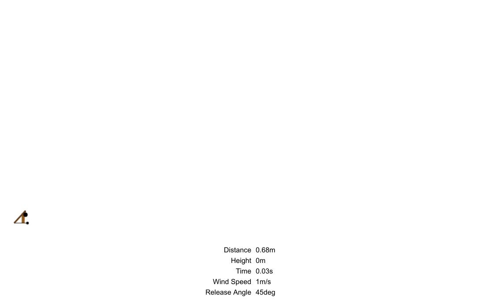
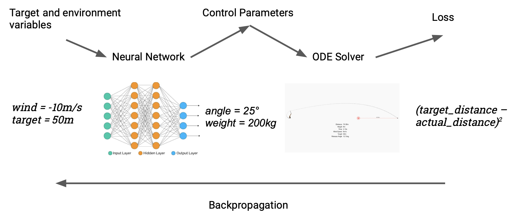
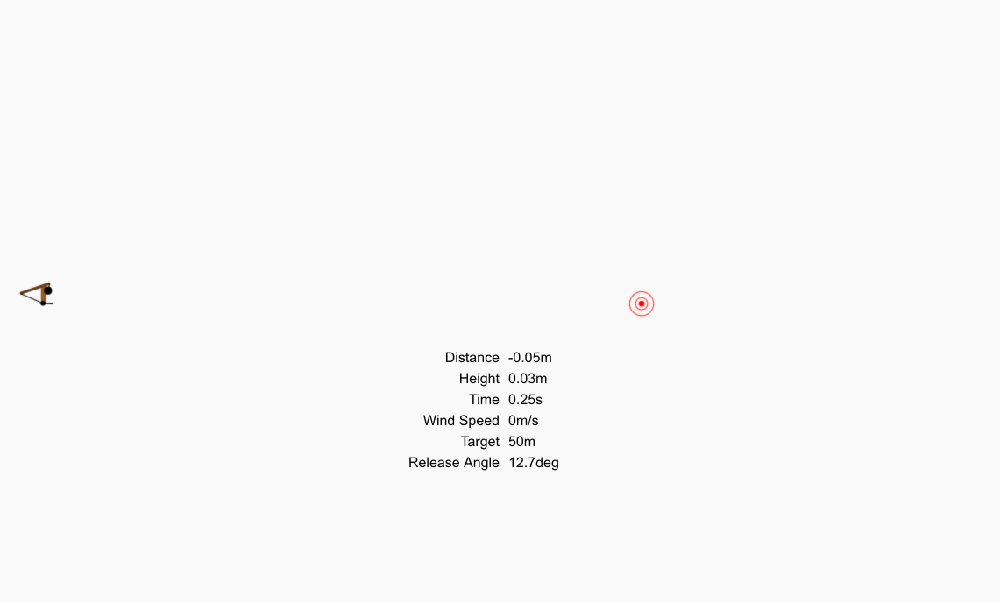
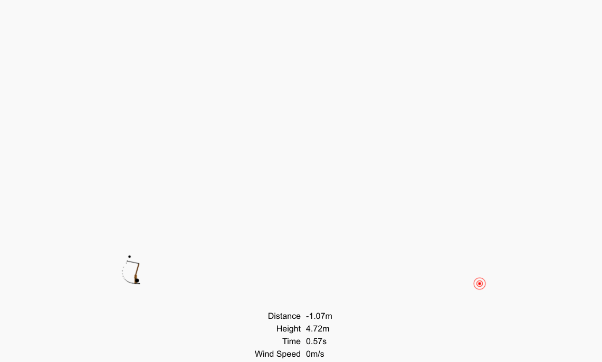
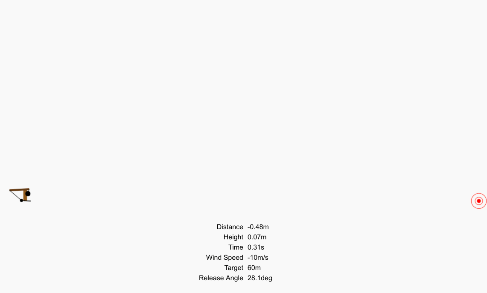
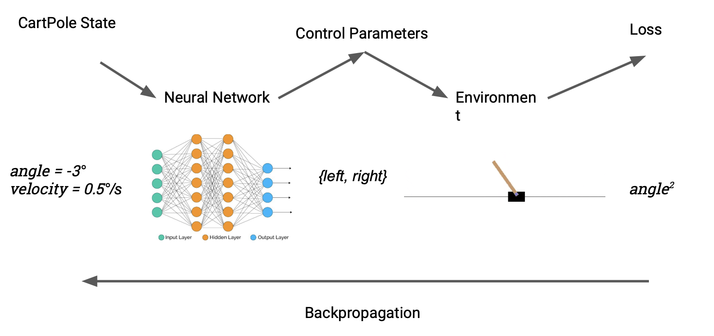
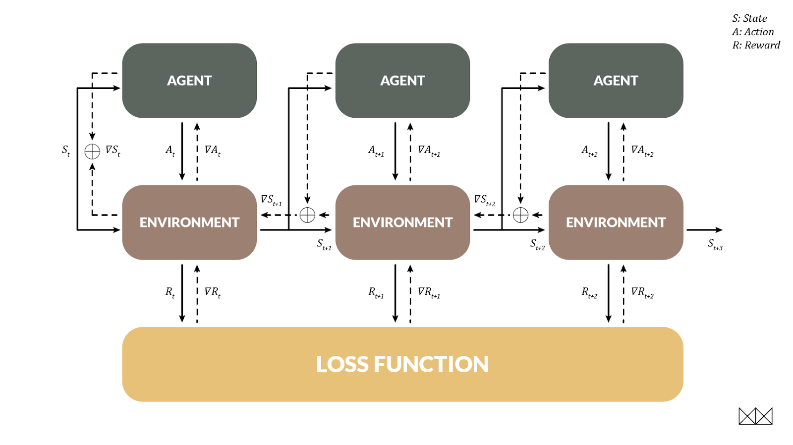
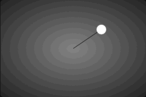
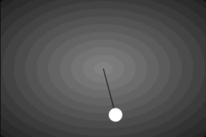

Differentiable Control Problems
We've discussed the idea of differentiable programming, where we incorporate existing programs into deep learning models. This article shows what ∂P can bring to some simple but classic control problems, where we would normally use black-box Reinforcement Learning (RL). ∂P-based models not only learn far more effective control strategies, but also train orders of magnitude faster. The code is all available to run for yourself – they will mostly train in a few seconds on any laptop.
Follow the Gradient
Differentiation is what makes deep learning tick; given a function \(y = f(x)\) we use the gradient \(\frac{dy}{dx}\) to figure out how a change in \(x\) will affect \(y\). Despite the mathematical clothing, gradients are actually a very general and intuitive concept. Forget the formulas you had to stare at in school; let's do something more fun, like throwing stuff.

When we throw things with a trebuchet, our \(x\) represents a setting (say, the size of the counterweight, or the angle of release), and \(y\) is the distance the projectile travels before landing. If you're trying to aim, the gradient tells you something very useful – whether a change in aim will increase or decrease the distance. To maximise distance, just follow the gradient.
Alright, but how can we get this magical number? The trick is a process called algorithmic differentiation, which is able to differentiate not only simple formulas like you learned in school, but also programs of any complexity – like our trebuchet simulator. The upshot is that we can take a simple simulator, written in Julia and DiffEq with no deep learning in mind, and get gradients for it in a single function call.
# what you did in school
gradient(x -> 3x^2 + 2x + 1, 5) # (32,)
# something a little more advanced
gradient((wind, angle, weight) -> Trebuchet.shoot(wind, angle, weight),
-2, 45, 200) # (4.02, -0.99, 0.051)Now we have that, let's do something interesting with it.
Throwing Stuff
A simple way to use this is to aim the trebuchet at a target, using gradients to fine-tune the angle of release; this kind of thing is common under the name of parameter estimation, and we've covered examples like it before. We can make things more interesting by going meta: instead of aiming the trebuchet given a single target, we'll optimise a neural network that can aim it given any target. Here's how it works: the neural net takes two inputs, the target distance in metres and the current wind speed. The network spits out trebuchet settings (the mass of the counterweight and the angle of release) that get fed into the simulator, which calculates the achieved distance. We then compare to our target, and backpropagate through the entire chain, end to end, to adjust the weights of the network. Our "dataset" is a randomly chosen set of targets and wind speeds.

A nice property of this simple model is that training it is fast, because we've expressed exactly what we want from the model in a fully differentiable way. Initially it looks like this:

After about five minutes of training (on a single core of my laptop's CPU), it looks like this:

If you want to try pushing it, turn up the wind speed:

It's only off by 16cm, or about 0.3%.
What about just aiming the trebuchet directly? It is easy to do this by gradient descent given that we have gradients. However, this is a slow iterative process that takes around 100ms each time. In contrast, running the neural network takes 5μs (twenty thousand times faster) with only a small loss in accuracy. This "approximate function inversion via gradients" trick is a very general one that can not only be used with dynamical systems, but also lies behind the fast style transfer algorithm.
This is about the simplest possible control problem, which we use mainly for illustrative purposes. But we can apply the same techniques, in more advanced ways, to classic RL problems as well.
Cart, meet Pole
A more recognisable control problem is CartPole, the "hello world" for reinforcement learning. The task is to learn to balance an upright pole by nudging its base left or right. Our setup is broadly similar to the trebuchet case: a Julia implementation means we can directly treat the reward produced by the environment as a loss. ∂P allows us to switch seamlessly from model-free to model-based RL.

The astute reader may notice a snag. The action space for cartpole – nudge left or right – is discrete, and therefore not differentiable. We solve this by introducing a differentiable discretisation, defined like so:
\[ \begin{aligned} f(x) &= \begin{cases} 1 & x \ge 0 \\\ -1 & x < 0 \end{cases} \\\ \frac{df}{dx} &= 1 \end{aligned} \]In other words, we force the gradient to behave as if \(f\) were the identity function. Given how much the mathematical idea of differentiability already gets abused in ML, it's perhaps not surprising that we can just cheat here; for training all we need is a signal to inform our pseudo-random walk around parameter space, and the rest is details.
The results speak for themselves. Where RL methods need to train for hundreds of episodes before solving the problem, the ∂P model only needs around 5 episodes to win conclusively.

The Pendulum & Backprop through Time
An important aim for RL is to handle delayed reward, when an action doesn't help us until several steps in the future. ∂P allows this too, and in a very familiar way: when the environment is differentiable, we can actually train the agent using backpropagation through time, just like a recurrent net! In this case the environmental state becomes the "hidden state" that changes between time steps.

To demonstrate this technique we looked at the pendulum environment, where the task is to swing a pendulum until it stands upright, keeping it balanced with minimal effort. This is hard for RL models; after around 20 episodes of training the problem is solved, but often the route to a solution is visibly sub-optimal. In contrast, BPTT can beat the RL leaderboard in a single episode of training. It's instructive to actually watch this episode unfold; at the beginning of the recording the strategy is random, and the model improves over time. The pace of learning is almost alarming.

Despite only experiencing a single episode, the model generalises well to handle any initial angle, and has something pretty close to the optimal strategy. When restarted the model looks more like this.

This is just the beginning; we'll get the real wins applying DP to environments that are too hard for RL to work with at all, where rich simulations and models already exist (as in much of engineering and the sciences), and where interpretability is an important factor (as in medicine).
The Map Is Not The Territory
The limitation of these toy models is that they equate the simulated training environment with the test environment; of course, the real world is not differentiable. In a more realistic model the simulation gives us a coarse outline of behaviour that is refined with data. That data informs (say) the simulated effect of wind, in turn improving the quality of gradients the simulator passes to the controller. Models can even form part of a controller's forward pass, enabling it to refine its predictions without having to learn system dynamics from scratch. Exploring these new architectures will make for exciting future work.
Coda
The core idea is that differentiable programming, where we simply write an arbitrary numerical program and optimise it via gradients, is a powerful way to come up with better deep learning-like models and architectures – especially when we have a large library of differentiable code to hand. The toy models described are really only previews, but we hope they give an intuition for how these ideas can be applied in more realistic ways.
Just as functional programming involves reasoning about and expressing algorithms using functional patterns, differentiable programming involves expressing algorithms using differentiable patterns. Many such design patterns have already been developed by the deep learning community, such as for handling control problems or sequence and tree structured data. As the field matures, many more will be invented, and the resulting programs are likely to make even the most advanced current deep learning architectures look crude by comparison.